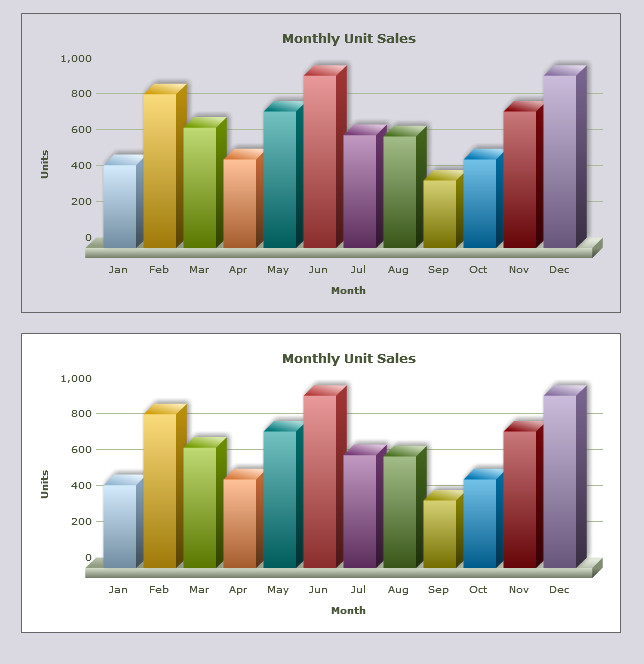

| Chart Transparency |
In the previous section we discussed the basics of using FusionCharts XT with ASP. In the current section, we will see how we can make the charts transparent. We will extend our previous example and only add a few more lines of code to make the chart transparent. |
| All code discussed here is present in Download Package > Code > ASP > BasicExample folder. |
| Creating a transparent and an opaque chart |
We will build two Column 3D charts, both using the same data-source. We take the existing SimpleChart.asp and Data.xml (present in Data folder) and modify these to achieve our goal. We modify SimpleChart.asp to render two column 3D charts. Let us first have a look at the modified code for SimpleChart.asp: ( We save it as SimpleChart_Transparent.asp) |
<%@ Language=VBScript %>
<HTML>
<HEAD>
<TITLE>FusionCharts XT - Simple Column 3D Chart</TITLE>
</HEAD>
<!-- #INCLUDE FILE="../Includes/FusionCharts.asp" -->
<BODY>
<div style="padding:40px; background-color:#9d7fbd; border:1px solid #745C92; width: 600px;">
<%
' Set the chart mode transparent. This will affect all the charts
' Rendered after this declaration.
Call SetTransparentChart(True)
' render chart : This will be a transparent chart
Call renderChart("../../FusionCharts/Column3D.swf", "Data/Data_Transparent.xml", "",
"myFirst_Transparent", 600, 300, false, false)
%>
<BR /><BR />
<%
' Set the chart mode opaque. This will affect all the charts
' Rendered after this declaration.
Call SetTransparentChart(False)
' Render chart : This will be an opaque chart
Call renderChart("../../FusionCharts/Column3D.swf", "Data/Data_Transparent.xml", "",
"myFirst_Opaque", 600, 300, false, false)
%>
</div>
</BODY>
</HTML> |
As you can see above, we did the following:
As you have noticed, we have used Data_Transparent.xml file as the Data URL source for both the charts. We did a little modification to the existing Data.xml file to set the background of the chart transparent and saved it as Data_Transparent.xml. Let us have a look at the modified XML: |
<chart caption='Monthly Unit Sales' xAxisName='Month' yAxisName='Units'
showValues='0' formatNumberScale='0' showBorder='1' canvasBgAlpha='0' bgAlpha='0'>
<set label='Jan' value='462' />
<set label='Feb' value='857' />
<set label='Mar' value='671' />
<set label='Apr' value='494' />
<set label='May' value='761' />
<set label='Jun' value='960' />
<set label='Jul' value='629' />
<set label='Aug' value='622' />
<set label='Sep' value='376' />
<set label='Oct' value='494' />
<set label='Nov' value='761' />
<set label='Dec' value='960' />
</chart> |
This XML is identical to our previous SimpleChart.asp example except for the bgAlpha and canvasBgAlpha attributes. The bgAlpha attribute sets the opacity of the chart's main background while canvasBgAlpha sets the opacity of the chart's 3D canvas. The attributes are set to 0 to declare full transparency. |
| Please note that to set a chart transparent we need to go through two steps. First we need to set the chart in Transparent mode. Finally, we need to set the bgAlpha (additionally canvasBgAlpha) attribute to apply transparency on the chart which has been set to transparent mode. One without the other is ineffective. Hence, we will find from the above example, that even though the second chart is set with transparency attribute values it remains opaque, since it is set to opaque mode. |
The resultant charts will look as follows:  |
| We find that the first chart is transparent. The background has vanished and the container's purple color is seen through the chart. The second chart, since set to opaque mode, has not turned transparent. Rather, an opaque white background is being shown. |